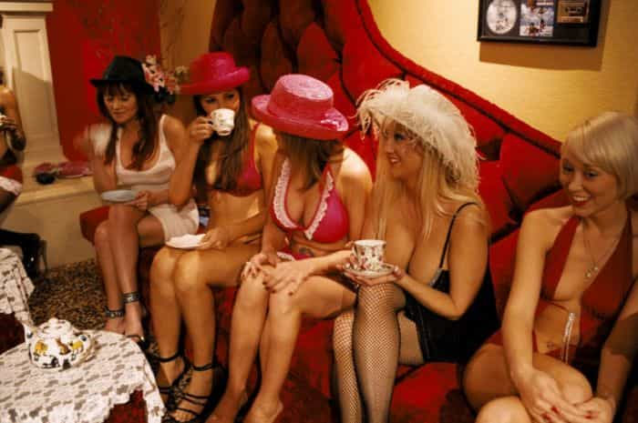

< < < Back
5 Things I Learned As A Young Brothel Manager – Return Of Kings
My time managing one of Melbourne’s seediest and most corrupt brothels has taught me many things, things that I will remember and use for the rest of my life. But before I can tell you all what I learnt, let me give you some background on who I am, and how I got into the underground sex industry.
As a very quiet, introverted young man, I always seemed to struggle finding jobs. I struggled with self-confidence and could sometimes barely string a sentence together. I had just turned 18 and had therefore got my driver’s license, 18 being the legal age to drive in my state of Australia. My older female cousin, having revealed to me that she was herself a brothel manager, offered me some part-time work as a driver for some of the international girls that worked for her brothel. Her brothel was a very up-market, classy establishment in the heart of the city where the girls were gorgeous, always practiced safe sex and rarely did drugs. Please note that prostitution is legal and regulated in Melbourne.
During this phase in my career, I learned a lot about sex, money, drugs, their secret lives, and basically the ins and outs of Melbourne’s sex industry. All of this was learnt from sitting around in my cousin’s brothel all day talking to the girls, to whom I became quite close with.
Anyway, my cousin eventually left her job at that brothel, and so I thought I would try to take on a managerial position of my own. However, with little experience I had, my only option was to work in a dodgy, run down, drug infested brothel in a shady part of town. The job was simple, create as much income for the business as possible and maintain a safe working environment for myself and the 30 girls that worked there. I was 19 at this stage and was the youngest manager to be working in any of Melbourne’s brothels.
Here are some of the lessons that I learnt as Melbourne’s youngest pimp brothel manager.
1. How to recognize a bullshitter
This one was quite easy to learn. As the men would come in, I’d direct them to an introduction room where the girls would introduce themselves 1 by 1 and answer any questions the client might have. Almost always, the bullshitters would ask to see one of the girls for a second time. This was because all he wanted was to get a good leer before leaving to masturbate over her memory later on. The bullshitters, (who were almost always young men, often in groups of 2-3) would come in with a big cheeky grin and nearly never had their wallet on them. This taught me the valuable lesson of paying attention to the details. Did he have his wallet in any of his pockets? Does he have his mate waiting for him in the car outside? Is he asking the girls any questions? Realizing who was genuine and who was not saved me and the girls a lot of time and effort as I would deny the bullshitters entry almost instantly.
2. Never mix business with pleasure
Arguably the golden rule in this industry, and is what eventually lead to my downfall. Having just broken up with my girlfriend of 2+ years, I was admittedly in a very vulnerable state. I became victim to the seduction of one of the girls working for me, and had (free of charge) fornication with her on the premises. She was extremely attractive and one of the best lays that I’ve had to this date, although allowing her to overpower my better judgment showed a weaker side of myself to all of the other girls who worked for me and to the business owner (my boss). The jealousy and bitchiness towards the girl I slept with and the snide remarks toward me eventually made the work environment chaotic. I lasted another 2 weeks in that job before the boss gave me the sack. Not only did I lose my job from this particular sexual encounter, I also contracted the clap as a result of a broken condom.
3. Men with secrets can be very valuable
It didn’t take me long to hear about all of the different fetishes that men have. I have heard it all. Men who want women to urinate on them, men who want women to masturbate with foods, men who want to be breast-fed by a lactating woman, men who want to lick women’s eye balls (yes that is completely true). The more embarrassing and socially awkward the fetish, the more we are likely to charge. You could be almost certain that the man who likes the woman to shove a vibrator up his ass will be more than willing to pay top dollar for not only the service itself, but the comfort in knowing he can return to a brothel that he feels comfortable in.
This means that the more he attends to this business, the more money we will ultimately make. It was my job to liaise with the client and then to organize his desires and pricing with the working gal of his choosing. It didn’t take me too long to capitalize on this, and by using simple sentences such as ‘yeah sure, she can do that. That’s no problem for her’ or ‘that’s the type of thing we specialize in here’ made the customers comfortable in what they were doing. This usually led to returning customers, me getting tips and having the regular clients bringing me pizza or whatever during night shift . I guess that making them not feel judged goes a long way!
4. Let women think they are in charge
As the laws of sex work in Melbourne are quite strict, and the industry is often regulated and patrolled by police, sexual slavery is nearly nonexistent, and all of the women are working by choice. This has led to an empowerment, as they are not forced to do what they are doing. Because the women cannot be forced to work, they seem to think that they are in charge of the place. They do have a legal right to refuse clients that they don’t like, refuse specific services they do not wish to partake in, leave bookings half way through if need be and so on. The business did have rules however. One was that the girls could work any shift that they pleased, as often as they pleased, but a shift was 8 hours long and they must respect that. The women would walk around all day telling me that they won’t accept a booking from a client because he was a particular size, nationality, age etc. In actual fact, it was my job to let them think this, and to hide the reality that I was the one calling all of the shots.

When one of the women wanted to, for example, refuse a client, I would simply ask them to reconsider and explain that the client is important for business. As they often aren’t always the brightest human beings, this made them feel like they are the one making the final decision and they are still ‘in control’. If I were to get an answer that I didn’t like then I would push the client and all future clients towards the other girls for the rest of the shift. I would make this action known to everyone to ensure that all of the women made the decision that was of my best interest.
By letting the girls make some decisions about the clients they see, and occasionally ignoring them breaking the 8 hour rule, I maintained an illusion that they had more power than they really did. The truth is that I controlled all of the money that went in and out of the business, and had full control over who the clients made their booking with. This all turned out great for business as the working girls felt strong and happy in their work, which resulted in better services and therefore better client satisfaction.
5. How to show dominance and authority
As a teen-aged man, of average height and weighing in at only 66kgs (145 lbs), I quickly learnt that trying to go toe to toe with men who made trouble in this business was not a smart way to work. Although I could not bring a huge physical presence to work each day, I found ways to assert my dominance and authority through my body language and tone of voice. With approximately 1 in 10 men who came in being drug dealers, wannabe gangsters and just overall trouble makers, making sure that they know I was the one in charge was of utmost importance. Displays of assertive body language from the moment they enter to the moment they leave ensured that trouble was kept to a minimum.
They sit when I stand, maintain strong eye contact and always talk louder than they do. I’d keep my head up at all times and would not hesitate when refusing demands from clients when necessary regardless of how intimidating they may be. This also applied when around the girls, but probably not to the same extent. Also, not being afraid to get up in the clients face and demand they leave when they were doing something wrong was important. These very basic displays of authority kept the work environment reasonably safe.
Now, as a 21-year-old, I am in a very different industry. But I will not forget the many lessons that I learnt during my time in the brothel. The main thing I got out of doing that line of work was the ability to be strong within myself during difficult situations.
Read More: The Enjoyment Of Pleasures


{kind=link}
{kind=link}